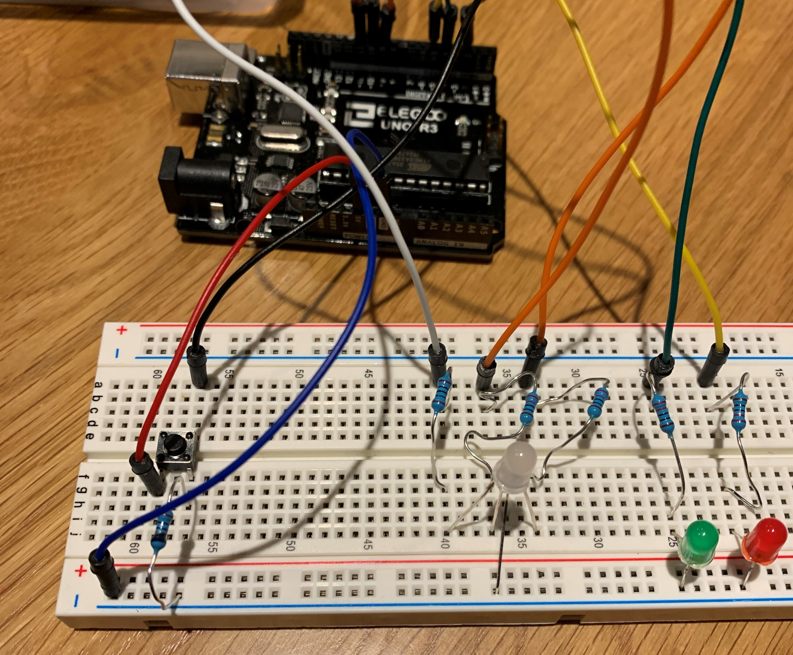

A2 - Fade
Design Requirements
- You must use LEDs and a button! How many LEDs and buttons is up to you. Your schematic, code, and circuit must correspond to each other! If they don't match, we may deduct points for the part that doesn't correspond to the others.
- You must limit the current flowing through the LEDs using resistors. You should calculate an appropriate resistance to use. Show your calculation.
- You must limit the current flowing through the button. Explain why you used the value you did.
- Your Arduino code should use analogWrite(), digitalWrite() and digitalRead(), as well as a for loop.
- At least one of your LEDs should fade. Within your code, for each line of code with content (i.e. not lines of code which are only white space, a curly brace, etc), add a short comment (// like this) above the line of code explaining what the line does.
Schematic and Circuit
Here is a schematic of my circuit (left) and my circuit board (right). I chose to use a blue, white, and red LED to recreate a police light bar. Each circuit has its own current and digital pin. The blue and white LEDs have a 100ohms resistor while the red has a 220ohms resistor. I chose these values after calculating the recommended resistance for a 20mA current through the different LEDS considering their voltage drop with a 5V voltage.
Code Snippet
/*
Turns on and off a light emitting diode(LED) connected to digital pins 9, 10, 11,
when pressing a pushbutton attached to pin 2.
*/
// constants won't change. They're used here to set pin numbers:
const int buttonPin = 2; // the number of the pushbutton pin
const int R = 9; // the number of the Red LED pin
const int G = 11; // the number of the Green LED pin
const int B = 10; // the number of the Blue LED pin
// variables will change:
int buttonState = 0; // variable for reading the pushbutton status
int ledPin = 0; // variable for the Multi-Color LED
int counter = 0; // variable for the number of times the LED cycles through colors
void setup() {
// initialize the Multi-Color LED pin as an output:
pinMode(ledPin, OUTPUT);
// initialize the Red LED pin as an output:
pinMode(4, OUTPUT);
// initialize the Green LED pin as an output:
pinMode(5, OUTPUT);
// initialize the pushbutton pin as an input:
pinMode(buttonPin, INPUT);
}
void loop() {
// read the state of the pushbutton value:
buttonState = digitalRead(buttonPin);
// check if the pushbutton is pressed. If it is, the buttonState is HIGH:
if (buttonState == HIGH) {
// Check if the counter is less than 10. If it is, it will turn
// on the Multi-Color LED and fades its color randomly 10 times
while (counter < 10) {
// Randomly changes the color fading for the LED (red, blue, or green)
ledPin=random(9, 12);
// fade in from min to max in increments of 5 points:
for (int fadeValue=0 ; fadeValue <=255; fadeValue +=5) {
// sets the value (range from 0 to 255):
analogWrite(ledPin, fadeValue);
// wait for 30 milliseconds to see the dimming effect
delay(20);
}
// fade out from max to min in increments of 5 points:
for (int fadeValue=255 ; fadeValue>= 0; fadeValue -= 5) {
// sets the value (range from 0 to 255):
analogWrite(ledPin, fadeValue);
// wait for 30 milliseconds to see the dimming effect
delay(20);
}
counter++; // Increments the counter variable
} else {
counter = 0; // Reset the counter to zero
digitalWrite(5, HIGH); // turn the Red LED on (HIGH is the voltage level)
delay(500); // wait for half a second
digitalWrite(5, LOW); // turn the Red LED off by making the voltage LOW
delay(500); // wait for half a second
digitalWrite(4, HIGH); // turn the Green LED on (HIGH is the voltage level)
delay(500); // wait for half a second
digitalWrite(4, LOW); // turn the Green LED off by making the voltage LOW
delay(500); // wait for half a second
}
}Demo
Here is a gif of my circuit and LEDs fading in action!